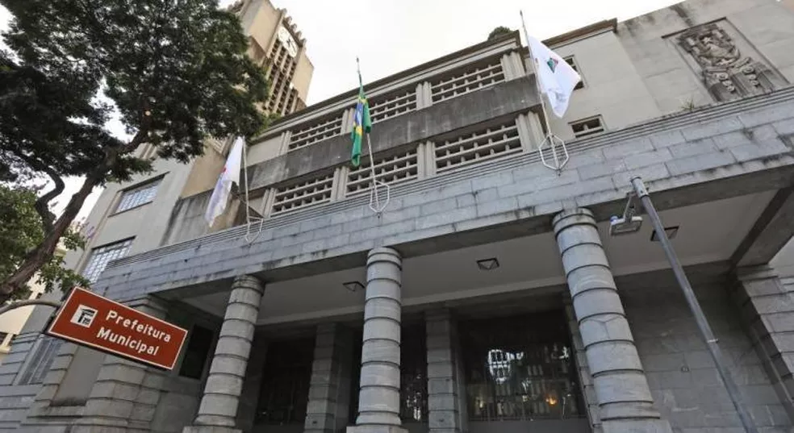

O Ministério Público de Contas apresentou uma denúncia contra o procurador-geral de Belo Horizonte,
por infração relacionada ao acesso à informação sobre transporte público.

O procurador Glaydson Santo Soprani Massaria, do Ministério Público de Contas (MPC),
apresentou uma denúncia à Câmara Municipal contra o procurador-geral
de Belo Horizonte, Hércules Guerra, por infração político-administrativa
relacionada ao acesso à informação.
O MPC havia solicitado à BHTrans, em 23 de março, uma série de documentos
e dados sobre o transporte público, incluindo a receita bruta do sistema de
ônibus nos últimos 12 meses, o número de usuários pagantes e a produção quilométrica.
No entanto, em 30 de março, o procurador-geral Hércules Guerra autorizou-se
a entregar os documentos solicitados, alegando que o MPC não tinha competência
constitucional para fazer a requisição e considerando-a "completamente infundada".
O procurador Glaydson Santo Soprani Massaria do MPC argumenta que, ao negar a informação,
o procurador-geral cometeu as seguintes infrações político-administrativas:
Impedir o exame de livros, folhas de pagamento e demais documentos que devam
constar dos arquivos da administração pública, bem como a fiscalização de obras
e serviços municipais, por comissão de investigação da Câmara, pelo Defensor do
Povo ou por auditores regularmente instituídos.
Praticar ato administrativo contra expressa disposição de lei ou omitir-se
na prática daquela por ela exigida.
De acordo com a Lei Orgânica do Município, as infrações cometidas pelo prefeito
ou pelos secretários municipais são julgadas pela Câmara. No entanto,
o procurador Hércules Guerra é considerado "ocupante de carga da mesma autoridade
do Secretário Municipal", conforme mencionado no ofício do procurador Glaydson Santo.
Segundo a presidência da Câmara Municipal, a denúncia foi encaminhada
à Procuradoria do Legislativo para avaliação técnica sobre a admissibilidade.
Se a denúncia for aceita, será concedida uma comissão processante para
emitir parecer sobre o prosseguimento ou arquivamento do caso.
Em resposta, a Prefeitura de Belo Horizonte afirmou que, seguindo o entendimento
do Supremo Tribunal Federal (STF), não especificou a requisição feita pelo
Ministério Público junto ao Tribunal de Contas. A Prefeitura alega que o MPC
não tem competência para requisitar informações e instaurar inquéritos e que
o acesso a informações sob custódia dos agentes públicos sujeitos ao controle
externo depende da instauração de procedimento no âmbito do respectivo Tribunal de Contas.
Alega-se que o MPC estaria usurpando a competência do Tribunal de Contas do
Estado (TCE) e do Ministério Público do Estado de Minas Gerais (MPMG) ao fazer
essa requisição. A Prefeitura ressalta que a requisição foi feita com base na Lei
Orgânica Nacional do Ministério Público, considerada inaplicável ao MPC.